Red
egg crab
Atergatis integerrimus
Family
Xanthidae
updated
Dec 2019
if you
learn only 3 things about them ...
 These colourful crabs are poisonous to eat! Their toxins
are NOT destroyed by cooking. These colourful crabs are poisonous to eat! Their toxins
are NOT destroyed by cooking.
They are generally secretive and slow-moving.
They
are not venomous but it's best not to touch them. |
|
Where
seen? This colourful round crab can be very commonly seen
on many of our shores in coral rubble areas and reefs. Slow moving,
it usually hides under large coral rubble pieces, but can be quite
active at night. |
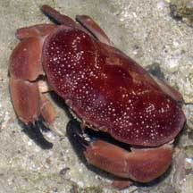
Raffles Lighthouse, Aug 06 |
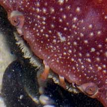
Small eyes which are all red.
Tiny white spots on the body. |
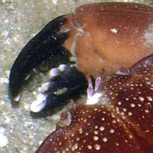
Pincers
with spoon-shaped tips
and large bumps. |
| Features: Body width 8-10cm. Body oval somewhat egg-shaped body with a smooth edge (not 'toothed').
Reddish brown, orangey to bright red, usually with scattered white
spots. Juveniles have a white margin around the body. Large pincers
both about equal in size, smooth (no pimples) with black tips that
are spoon-shaped. Males may have larger pincers. Walking legs not
hairy. Juveniles are light brown with a white band around
the edge of the body. Like most other Xanthid crabs, it is highly
poisonous and should not be eaten. |
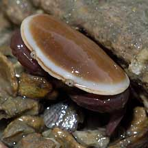
A juvenile Red egg crab.
Tuas, Nov 03 |
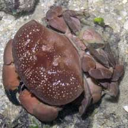
A pair of mating egg crabs.
Sentosa, Aug 06 |
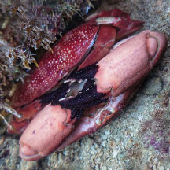
A pair of mating egg crabs.
Terumbu Hantu, Aug 23
Photo shared by Richard Kuah on facebook. |
Sometimes mistaken for Stone
crabs (Myomenippe hardwicki) and Maroon
stone crab (Menippe rumphii). Here's
more on how to tell apart big crabs
with big pincers seen on the rocky shores and coral rubble.
Status and threats: This crab
is listed as 'Vulnerable' in the Red Data list of threatened animals
of Singapore. |
|
|
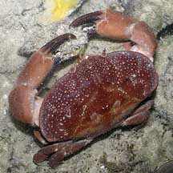
Manipulating
an algae covered stone.
Labrador, May 06 |
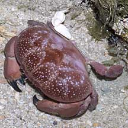
With
one white leg.
Terumbu Pempang Tengah, May 11 |
| Red
egg crabs on Singapore shores |
| Other sightings on Singapore shores |
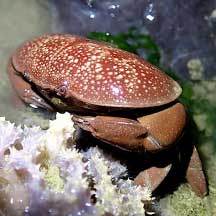
Changi Loyang, May 21
Photo shared by Jianlin LIu on facebook. |
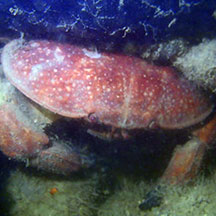
Changi, Jun 20
Photo shared by Abel Yeo on facebook. |
|
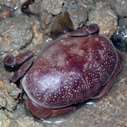
Changi Creek, Nov 25
Photo shared by Rui Quan Oh on facebook. |
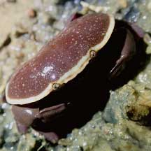
Changi, Jul 21
Photo shared by Jianlin Liu on facebook. |
|
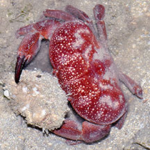
Chek Jawa, Jun 23
Photo shared by Loh Kok Sheng on facebook. |
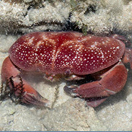
Pulau Sekudu, Aug 23
Photo shared by Marcus Ng on facebook. |
|
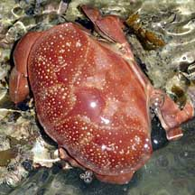
Tanah Merah, Jun 10
Photo shared by Loh Kok Sheng on his
flickr. |
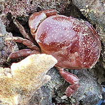
Tanah Merah Ferry Terminal, Jun 23
Photo shared by Che Cheng Neo on facebook. |
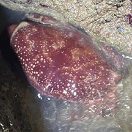
East Coast Park (PCN), Aug 23
Photo shared by Kelvin Yong on facebook. |
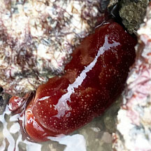
East Coast (G), Dec 22
Photo shared by Kelvin Yong on facebook. |
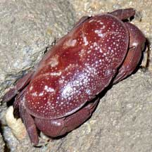
East Coast Park, May 21
Photo shared by Loh Kok Sheng on facebook. |
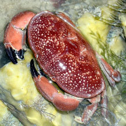
East Coast Park (B), Nov 25
Photo shared by Loh Kok Sheng on facebook. |
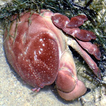
Labrador, Oct 25
Photo shared by Loh Kok Sheng on facebook. |
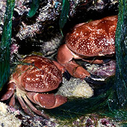
Sentosa Tg Rimau, Oct 25
Photo shared by Loh Kok Sheng on facebook. |
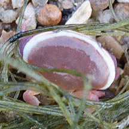
Sentosa Tg Rimau, Jan 26
Photo shared by Rui Quan Oh on facebook. |
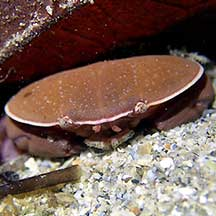
Lazarus Island, Feb 21
Photo shared by Jianlin Liu on facebook. |
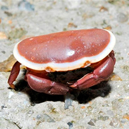
Seringat-Kias, Aug 12
Photo shared by Loh Kok Sheng on his
blog. |
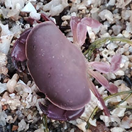
St John's Island, Jun 24
Photo shared by Tommy Tan on facebook. |
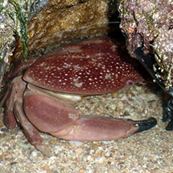
Terumbu Buran, Jan 10
Photo shared by Loh Kok Sheng on flickr. |
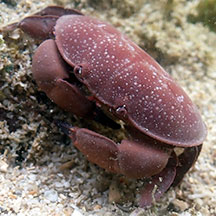
Terumbu Selegie, May 24
Photo shared by Loh Kok Sheng on facebook. |
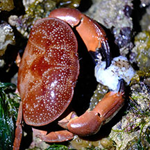
Pulau Jong, Aug 25
Photo shared by Adriane Lee on facebook. |
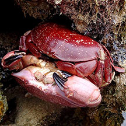
Cyrene, Aug 17
Photo shared by Abel Yeo on facebook. |
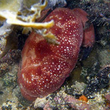
South Cyrene, Oct 10
Photo shared by Loh Kok Sheng on flickr. |
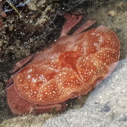
Terumbu Hantu, May 25
Photo shared by Richard Kuah on facebook. |
| \ 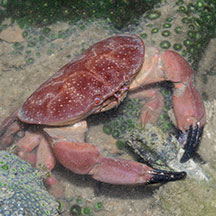
Pulau Semakau East, Feb 26
Photo shared by Marcus Ng on facebook. |
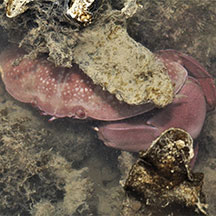
Terumbu Bemban, Jul 18
Photo
shared by Abel Yeo on facebook. |
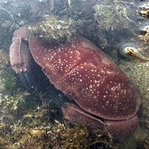
Beting Bemban Besar, Oct 25
Photo shared by Tammy Lim on facebook |
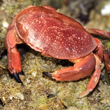
Terumbu Pempang Laut, Apr 11
Photo
shared by Russel Low on facebook. |
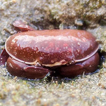
Terumbu Pempang Laut, Jul 20
Photo
shared by Vincent Choo on facebook. |
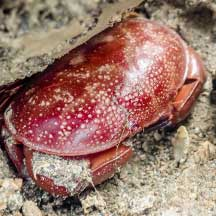
Pulau Berkas, Feb 22
Photo shared by Vincent Choo on facebook. |
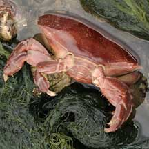
Pulau Biola, Dec 09
Photo shared by James Koh on his
flickr. |
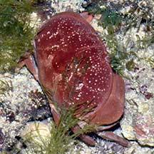
Pulau Salu, Apr 21
Photo shared by Loh Kok Sheng on facebook. |
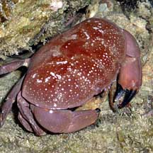
Terumbu Salu, Jan 10
Photo shared by Loh Kok Sheng on his
flickr. |
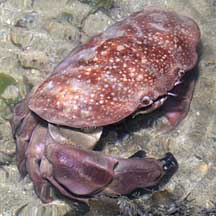
Pulau Senang, Jun 10 |
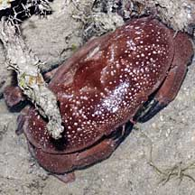
Pulau Pawai, Dec 09 |
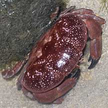
Pulau Sudong, Dec 09 |
Acknowledgements
Grateful thanks to Ondřej Radosta and Ryanskiy Andrey from ID Please (Marine Creatures) facebook page for helping me to understand the appearance of juvenile Atergatis integerrimus.
Links
References
- Eugene Goh, Jerome Yong, Brian Cabrera, Ron Kirby Manit & Karenne Tun. 6 November 2015. Red egg crab releasing larvae. Singapore Biodiversity Records 2015: 171-172
- Chou, L.
M., 1998. A Guide to the Coral Reef Life of Singapore.
Singapore Science Centre. 128 pages.
- Lim, S.,
P. Ng, L. Tan, & W. Y. Chin, 1994. Rhythm of the Sea: The Life
and Times of Labrador Beach. Division of Biology, School of
Science, Nanyang Technological University & Department of Zoology,
the National University of Singapore. 160 pp.
- Davison,
G.W. H. and P. K. L. Ng and Ho Hua Chew, 2008. The Singapore
Red Data Book: Threatened plants and animals of Singapore.
Nature Society (Singapore). 285 pp.
- Gopalakrishnakone
P., 1990. A
Colour Guide to Dangerous Animals.
Venom & Toxin Research Group, Faculty of Medicine, National
University of Singapore. 156 pp.
- Jones Diana
S. and Gary J. Morgan, 2002. A Field Guide to Crustaceans of
Australian Waters. Reed New Holland. 224 pp.
|
|
U |